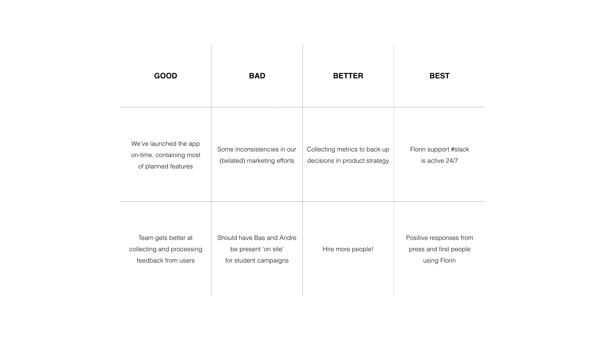

At Backspace, we use a simple format for team retrospectives. Retrospective comes from the Latin retrospective (to look back) and in the context of a technology ventures it is quite simply a meeting with the complete product team to gather feedback on the work, and possibly even more important, on the process.
The format finds its roots in scrum or agile methods for software development, where outcomes and learnings are shared at regular intervals (from daily to bi-weekly) to stay on track. Although large companies often fail at team retrospectives, because you need ‘everyone in the room’, smaller shops without those practical limitations also tend to underestimate its power as a continuous improvement technique.
How to prepare
The meetings are usually prepared, facilitated and documented by one team member, who asks the others to think about answers to the following four questions before the session:
-
Things that went well (where we met expectations)
-
Things that did not go well (mistakes we don’t expect to repeat)
-
Things we can do better (can include a suggestion)
-
Things to celebrate (applause!)
Practically, that means:
-
Pick a spacious room or corner (out) of your office, get a whiteboard or some paper out with pens and post-its. A different space can help foster an open and honest culture, where everyone feels comfortable to participate.
-
Put the four categories on the whiteboard and have every team member take his or her turn to share the answers they prepped in advance. Their brief explanation can be followed by a call for “any comments or thoughts?”.
The process is this simple, because it helps to create a shared understanding between a group of people with different information processing styles. At Backspace, we benefit from formulating the things we can do better as ‘roles’, because we use some of the vocabulary from a specific governance practice, called Holacracy. In our case, a particular role might have fallen through the cracks this time, or wasn’t picked up by the person responsible.
From agile to slow
Although the above might seem simplistic and even to the point of childish, overcomplicating the matter is the biggest pitfall. If you’re the person to organise the sessions, we would even recommend you to not formulate action points and divide tasks after the meeting. By suppressing your inner product manager, the team is more likely to take on responsibilities themselves. Yes, this is where it gets real tough.
The ‘physical’ reflection on a process by writing on post-its, whiteboards and spending time in one room together is like relationship therapy for teams. When team members slow down and take time to speak their minds, admit mistakes and co-create improvements is powerful medicine.
Case study: Florin
Below, we’ve published a short case study to help you internalise the theory above: Florin’s hard launch.

As you see, the ‘actions’ are missing. That’s the best way to have a team learn from its mistakes by improving without the prompts from a product manager. Because they, too, prefer to hear new answers every retrospective.